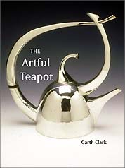
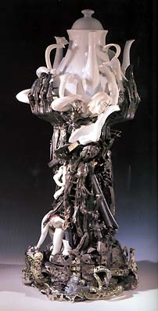

| Garth Clark - The Artful
Teapot
Review by Steven Goldate
The
Artful Teapot was published to accompany the major travelling
show of the same name, which has toured Canada and the USA and can
be viewed at the Mint Museum of Craft and Design in Charlotte, North
Carolina, until June 1, 2004. The exhibition and book draw on the
extensive collection of Sonny and Gloria Kamm - with around 6,000
pieces probably the largest collection of one-of-a-kind art teapots
in the world.
Those who were unable to visit the show may console themselves with
Clark's publication, which offers not only the opportunity to view
many of the works in 2D, but also gives various insights into the
discourses surrounding the world of tea, from its at times tumultuous,
4,000 year history ('Opium Wars'; the 'Boston Tea Party'), its ritualistic,
pseudo-religious aspects (the Japanese Tea Ceremony; English 'High
Tea') or the 'romance of tea' - its association with exotic lands
and a perceived finesse, as exemplified by tea "served in a
silver pot in the wood-panelled dining room of the Milan to Rome
express".
Having touched upon the history and mystery of tea, Clark leads
us into the world of the art teapot with a look at Yixing and its
influence on the West. The Chinese Yixing teapot is really in a
class of its own. Various scholars have written about it, numerous
websites are dedicated to it and many a potter have been inspired
by it. Most notable of these is perhaps American ceramist Richard
Notkin, who, appropriating the Yixing style, created a body of modern,
socio-critical works, e.g. his iconic 'Double Cooling Tower Teapot'.
Other artists mentioned in this category range from modern Yixing
master Dingfang Zhou to Dutch ceramist Jeroen Bechtold.
The teapot developed in China around the 16th century. In the West,
elegant teapots were wrought in silver during the 18th century and
Staffordshire potteries created whimsical cauliflower or pineapple
shaped teapots. The passion for the artistic teapot has certainly
not waned over the centuries, reflecting tea's unshakeable cosmopolitan
position as the world's leading hot beverage.
One can broadly divide art teapots into two categories: functional
and non-functional. Form and function have been a concern in modern
design since the early 20th century (if not earlier), culminating
in Walter Gropius' ultra-elegant teapot 'TAC1', but also evident
in the work of eminent British potter Bernard Leach or America's
'mad potter of Biloxi' George E. Ohr.
Then again, art is not usually about function. Sometimes, like the
fashion conscious dresser who sacrifices comfort for style, the
teapot maker will sacrifice functionality for decorative effects
or concept. So the teapot leaves the realm of the dining room or
tea house and enters that of the gallery and museum. The possibilities
are endless, as the Kamm collection shows with some stunning examples.
Among
these are Michael Lucero's bizarre dual 'Eye Ohr' teapots of 1993,
Ken Ferguson's 'Teapot with Turtle and Hare' of 1997, with a decidedly
mischievous looking spout, and Richard Milette's 'Teapot' of 1992,
which references several major ceramic traditions in the form of
trompe l'oeil shards. The teapot lends itself readily to this artistic
device, where one material imitates another. Ah Leon's works convincingly
mimic redwood, while Gail Ritchie's tea set looks like it's made
from birch bark. Paul Dresang's subliminally erotic 'Bag' of 1994
has a pot emerging from a faux pigskin bag, complete with ceramic
zipper.
Other artists dispense of functionality altogether, working with
the concept of the teapot instead. In his mixed-media work 'Dear
Mother' (2000), Ron Baron creates an oversize statue of a teapot
on a pedestal, made from stacked cups, plates and other materials.
Lazslo Fekete's 'Resurrection of a Teapot' (2000; pictured) is an
homage to the teapot, reminiscent of elements of Hieronymus Bosch's
paintings. Piet Stockmans' irreverent 'Twenty-Five Teapots' of 2000
consists of cast and flattened teapots partly dipped in his signature
cobalt-blue slip. Hung neatly on a wall, they look like deflated
footballs. Then there are those artists who use what can only be
called 'impossible' materials, e.g. Daniel Chatt's beadwork 'Karilyn's
Tea Service' of 1997-98, Zoe Morrow's 'Five on the Line' of 1999,
made of woven five dollar bills, or John McQueen's basketwork 'Teaser-Vice'
(1999), made of twigs and string.
With over 250 colour images, The Artful Teapot is not only an in-depth
look at the Kamm's impressive collection, but also a general survey
of the teapot throughout the ages (with an emphasis on the contemporary).
I would like to commend Garth Clark for the inclusion of a short
bio of each artist - often omitted in such publications - at the
rear of the book, giving the reader, if he/she so desires, the opportunity
to find out more about the artists featured.
Cloth bound in oversize hardcover, this publication will be a fitting
addition to the tea lover's or teapot enthusiast's library, and
a good complement to Clark's previous book, The Eccentric Teapot,
Four Hundred Years of Innovation, published in 1989.
The Artful Teapot
USA: Watson-Guptill, 2001. ISBN: 0823003191
UK, Australia, New Zealand: Thames & Hudson, 2001. ISBN: 0500510458
More book reviews
More articles
|